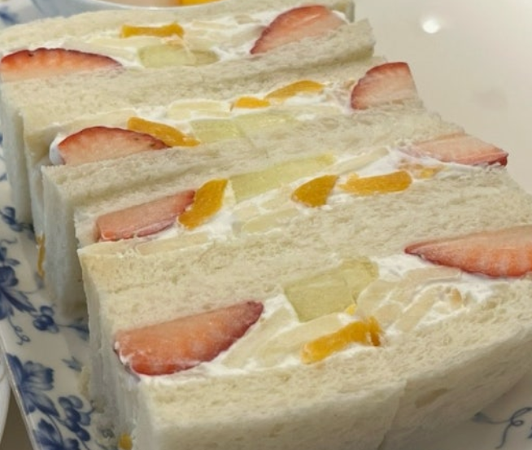
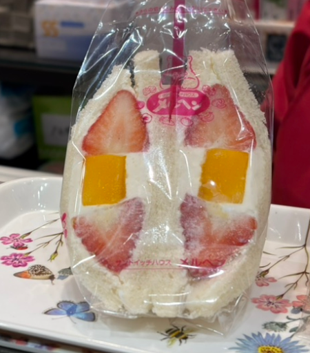
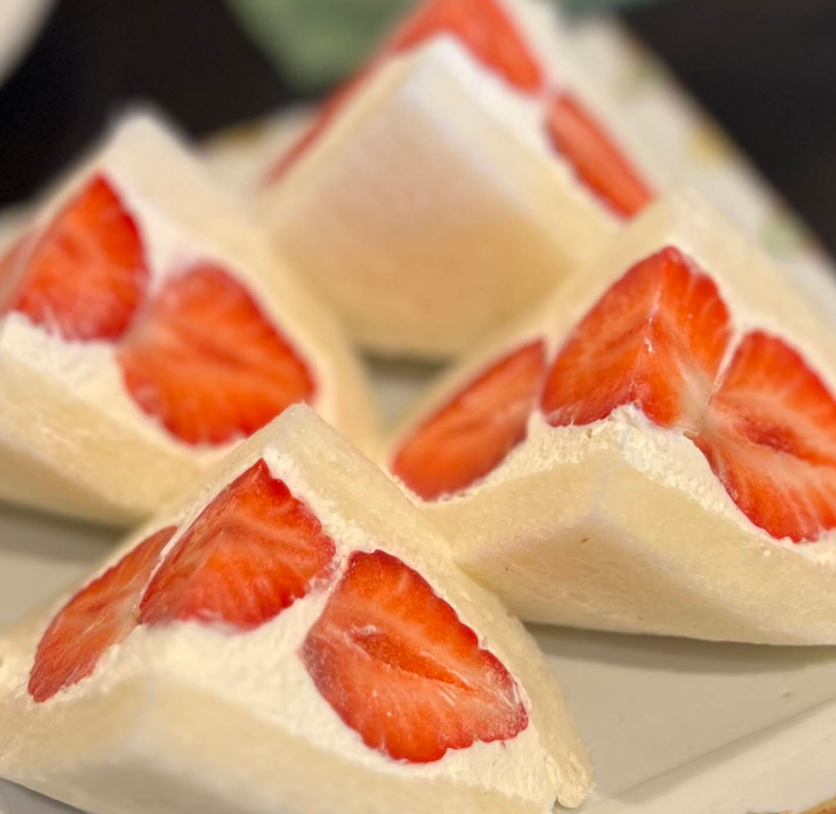

달콤한 과일과 생크림이 어우러진 일본 대표 디저트
올해 8월 가족여행으로 언니가 있는 도쿄를 방문할 계획이다. 여행을 준비하면서 직접 가볼 만한 장소를 찾아보기 위해 도쿄의 후르츠산도 맛집을 주제로 선정하였다.
후르츠산도는 식빵 사이에 생크림과 신선한 과일을 넣어 만든 일본의 대표 디저트이다. 보기에도 예쁘고 맛도 좋아 관광객들에게 많은 사랑을 받고 있다.


